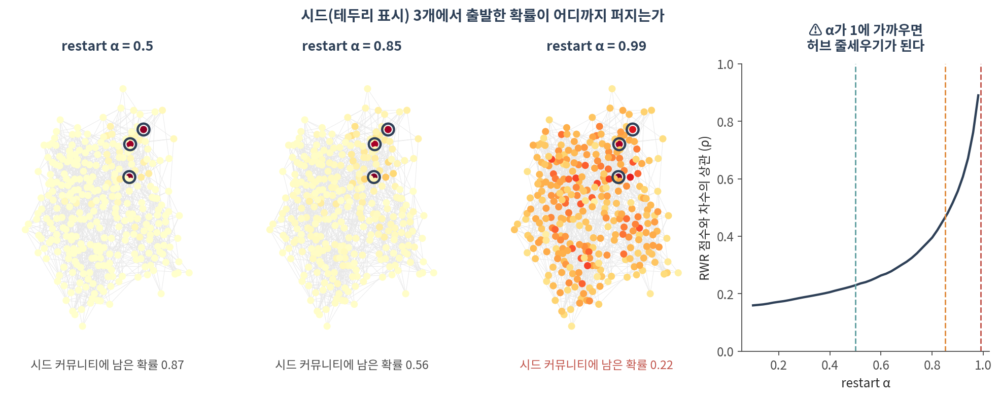
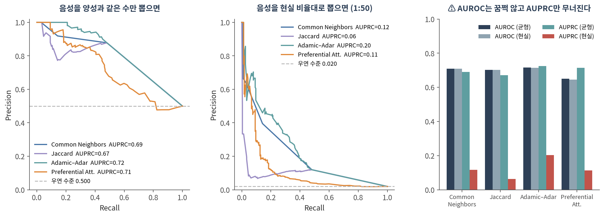
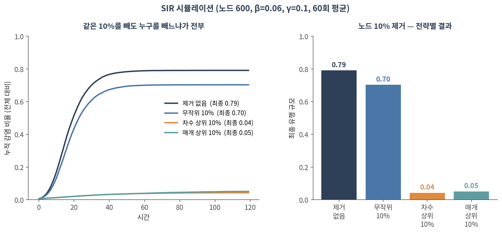

06. 전파와 예측
이 챕터를 마치면 다음을 할 수 있습니다.
- guilt-by-association 가정이 무엇이고 언제 깨지는지 말할 수 있다
- 재시작 랜덤워크를 직접 구현하고 질병 유전자 우선순위에 쓸 수 있다
- ⚠️ restart 파라미터가 결과를 어떻게 바꾸는지, 1에 가까울 때 무엇이 되는지 설명할 수 있다
- 링크 예측 heuristic 네 가지를 구분하고 ⚠️ AUROC 대신 AUPRC를 봐야 하는 이유를 말할 수 있다
- ⚠️ 예측된 링크의 차수 편향을 확인할 수 있다
- SIR 모형으로 개입 전략을 비교할 수 있다
🤔 생각해볼 질문
GWAS가 후보 영역 30개를 줬고, 그 안에 유전자가 400개 있습니다. 어느 것부터 실험하시겠습니까?
1. Guilt-by-association 🤝
1) 하나의 가정
이 챕터의 모든 방법은 한 문장 위에 서 있습니다.
이웃은 서로 비슷하다 (homophily)
- 같은 복합체의 단백질은 같은 과정에 관여한다
- 같은 모듈의 유전자는 같은 조건에서 함께 움직인다
- 공간적으로 가까운 세포는 같은 미세환경에 있다
⚠️ 그런데 이 가정이 깨지는 경우가 있습니다.
- 길항 관계 — 활성화와 억제는 둘 다 엣지이지만 방향이 반대입니다(🔗 02 §1)
- 다기능 단백질 — 여러 모듈에 걸쳐 있어 어느 이웃을 닮아야 할지 모호합니다
- heterophily 네트워크 — 서로 다른 것끼리 붙는 구조. 이럴 때는 전파가 오히려 해롭습니다
✅ 그러니 전파를 쓰기 전에 “내 네트워크에서 이웃이 실제로 비슷한가”를 먼저 확인하세요. 이미 알려진 레이블로 검증할 수 있습니다.
2) 준지도 추론의 계보
| 방법 | 방식 | 특징 |
|---|---|---|
| Relational classification | 이웃 레이블의 가중 평균을 수렴할 때까지 반복 | 가장 단순. node feature를 못 씀 |
| Iterative classification | 이웃 요약을 특징으로 넣은 분류기를 반복 적용 | node feature 사용 가능 |
| Belief propagation | 이웃끼리 메시지를 주고받으며 확률 갱신 | 고리가 있으면 수렴 보장 없음 |
💡 셋 다 “이웃에게서 정보를 받아 나를 갱신하고, 그걸 반복한다”는 같은 뼈대입니다. 12의 그래프 신경망이 이 뼈대에 학습을 붙인 것입니다.
2. 네트워크 전파 🌊
1) 재시작 랜덤워크 (RWR)
시드 유전자 몇 개에서 출발해 네트워크로 확률을 퍼뜨립니다.
\[p_{t+1} = \alpha \, W p_t + (1-\alpha)\, p_0\]
- \(p_0\) — 시드에만 1을 준 출발 벡터 (알려진 질병 유전자들)
- \(W\) — 열 정규화한 인접 행렬 (한 걸음 이동)
- \(\alpha\) — restart 파라미터. 매 걸음 \((1-\alpha)\)의 확률로 시드로 되돌아갑니다
- 수렴한 \(p\)가 각 노드의 점수입니다
💡 \(p_0\)를 균등하게 주면 그냥 PageRank입니다. 시드에 몰아주므로 personalized PageRank라고도 부릅니다(🔗 03 §3).
2) ⚠️ restart 파라미터가 결과를 만든다

| α | 시드 커뮤니티에 남은 확률 | 차수와의 상관 ρ |
|---|---|---|
| 0.30 | 0.939 | 0.188 |
| 0.50 | 0.866 | 0.229 |
| 0.70 | 0.737 | 0.311 |
| 0.85 | 0.559 | 0.464 |
| 0.95 | 0.347 | 0.713 |
| 0.99 | 0.222 | 0.954 |
- α가 작으면 시드 바로 옆만 봅니다 — 보수적이지만 새로운 발견이 적습니다
- ⚠️ α가 1에 가까우면 차수와의 상관이 0.95입니다. 질병 유전자를 찾는 게 아니라 허브를 줄세우고 있는 것입니다
- 흔히 쓰는 값은 0.5–0.8 사이입니다. 하지만 정답은 없습니다 → 01·05와 같은 이야기
✅ 반드시 할 일:
- α를 바꿔가며 상위 후보가 유지되는지 확인
- 차수와의 상관을 계산해 보고하세요. 높으면 그 순위는 네트워크 전파의 결과가 아니라 차수의 결과입니다
- ✅ 차수를 보존한 재배선 null(🔗 04 §2)로 각 후보의 Z-score를 내면 가장 깔끔합니다
3) 어디에 쓰는가
- 질병 유전자 우선순위 — GWAS 후보 영역의 유전자 400개 중 어느 것부터 볼지
- 유전자 기능 예측 — 기능이 밝혀지지 않은 유전자에 GO term 붙이기
- 모듈 확장 — 알려진 경로 구성원에서 출발해 빠진 구성원 찾기
- 약물 재창출 — 약물–표적–질병 지식 그래프에서 전파
3. 링크 예측 🔮
1) Heuristic 네 가지
두 노드 u, v가 이어질 법한지 점수를 매깁니다. \(\Gamma(u)\)는 u의 이웃 집합.
| 방법 | 점수 | 아이디어 |
|---|---|---|
| Common Neighbors | \(|\Gamma(u) \cap \Gamma(v)|\) | 공통 이웃이 많으면 |
| Jaccard | 공통 이웃 / 전체 이웃 | 차수로 보정 |
| Adamic–Adar | \(\sum_{w} 1/\log k_w\) | 공통 이웃이 희귀할수록 가중 |
| Preferential Att. | \(k_u \times k_v\) | 둘 다 허브면 |
💡 Adamic–Adar가 대체로 가장 잘합니다 — “둘 다 아는 사람이 마당발이면 별 정보가 아니다”는 직관이 맞습니다.
2) ⚠️ 평가가 진짜 함정이다
엣지 10%를 숨기고 복원해보는 실험입니다. 음성(비연결 쌍)을 몇 개나 뽑느냐가 결과를 바꿉니다.

| 방법 | AUROC (균형) | AUROC (현실) | AUPRC (균형) | AUPRC (현실) |
|---|---|---|---|---|
| Common Neighbors | 0.709 | 0.709 | 0.690 | 0.117 |
| Jaccard | 0.702 | 0.702 | 0.672 | 0.063 |
| Adamic–Adar | 0.717 | 0.715 | 0.724 | 0.204 |
| Preferential Att. | 0.650 | 0.645 | 0.714 | 0.114 |
- ⚠️ AUROC는 소수점 셋째 자리까지 거의 그대로입니다. 음성을 50배 늘려도 꿈쩍하지 않습니다
- ⚠️ AUPRC는 0.7에서 0.1 근처로 무너집니다
- 왜? AUROC는 양성·음성 비율에 둔감하도록 설계된 지표입니다. 실제로 쓸 때 중요한 것은 “상위 100개를 실험하면 몇 개가 맞나”인데, 그건 AUPRC가 답합니다
- 실제 PPI는 밀도가 1% 미만이라 현실의 불균형은 1:50보다 훨씬 심합니다
✅ 링크 예측 논문·결과를 볼 때:
- ✅ AUPRC와 우연 수준(양성 비율)을 함께 보세요. 위 그림의 회색 점선입니다
- ✅ 음성을 어떻게 뽑았는지 확인하세요. 1:1로 뽑았다면 성능이 부풀려진 것입니다
- ✅ 상위 k개 정밀도(precision@k)가 실무에는 가장 솔직한 지표입니다
3) ⚠️ 차수 편향
같은 실험에서 Adamic–Adar 점수 상위 200쌍의 평균 차수를 재봤습니다.
| 평균 차수 | |
|---|---|
| 전체 노드 | 5.98 |
| AA 상위 200쌍 | 14.80 |
| AA 하위 200쌍 | 5.47 |
- 예측된 링크는 대체로 허브끼리의 연결입니다
- ⚠️ 그리고 허브는 곧 많이 연구된 유전자입니다(🔗 07) → “새로운 상호작용 예측”이 실은 “유명한 단백질 둘”일 수 있습니다
- ✅ 대응: 차수를 맞춘 null과 비교하거나, 차수로 층화해서 평가하세요
4) 데이터 누출
- ⚠️ 엣지를 숨긴 뒤 숨긴 엣지가 포함된 상태로 특징을 계산하면 성능이 부풀려집니다
- ⚠️ 시간 정보가 있다면 무작위 분할이 아니라 시점 기준 분할이어야 합니다 (과거로 미래를 예측)
- ⚠️ 엣지를 지우면 고립되는 노드가 생깁니다. 그 노드는 어떤 방법으로도 맞힐 수 없습니다
4. 확산 모델 🦠
1) 두 계열
- Linear threshold — 이웃 중 일정 비율 이상이 활성화되면 나도 활성화. 결정론적
- Independent cascade — 활성화된 이웃이 각각 확률 p로 나를 감염시킴. 확률적
- SIR / SIS — 감수성(S) → 감염(I) → 회복(R). 역학의 고전 모형
💡 \(R_0\)(기초감염재생산수)가 1을 넘으면 유행이 퍼집니다. 네트워크에서는 차수 분산이 클수록 임계값이 낮아집니다 — 허브가 있으면 잘 퍼진다는 뜻입니다.
2) 같은 10%를 빼도, 누구를 빼느냐가 전부

| 전략 | 최종 유행 규모 |
|---|---|
| 제거 없음 | 0.79 |
| 무작위 10% | 0.70 |
| 차수 상위 10% | 0.04 |
| 매개 상위 10% | 0.05 |
- ⚠️ 무작위로 10%를 빼는 것은 거의 효과가 없습니다 (0.79 → 0.70)
- ✅ 차수 상위 10%를 빼면 유행이 20분의 1로 줄어듭니다
- 허브가 있는 네트워크는 무작위 고장에는 강하고 표적 공격에는 약합니다
💡 이 결과의 함의:
- 백신·방역에서 접촉이 많은 집단을 우선하는 근거
- ⚠️ 그런데 실무에서는 누가 허브인지 모르는 것이 문제입니다. 네트워크를 아는 것 자체가 개입입니다
- 생물학에서는 신호전달 캐스케이드 차단 표적 선정에 같은 논리가 쓰입니다
3) 영향력 최대화
- “k개 노드를 골라 확산을 최대화하라” — 최적해를 찾는 것은 계산적으로 어렵습니다(NP-hard)
- ✅ 그런데 목적함수가 submodular(수확 체감)이라서, 하나씩 탐욕적으로 고르면 최적의 63% 이상이 보장됩니다 (Kempe et al. 2003)
- ⚠️ 단순히 차수 상위 k개를 고르는 것과는 다릅니다 — 허브끼리 겹치면 낭비이므로
Colab에서 실행합니다. 설치는 90. Colab 환경 설정 참고.
import numpy as np, pandas as pd, networkx as nx
from scipy.stats import spearmanr
from sklearn.metrics import roc_auc_score, average_precision_score
G = nx.karate_club_graph() # 자기 네트워크로 바꿔도 그대로 돌아갑니다
G = G.subgraph(max(nx.connected_components(G), key=len)).copy()
order = list(G.nodes())
A = nx.to_numpy_array(G, nodelist=order)
W = A / A.sum(0) # 열 정규화
deg = np.array([G.degree(v) for v in order])
# ── 1. RWR 구현 ──────────────────────────────────────────────────────
def rwr(seeds, alpha=0.7, iters=300):
p0 = np.zeros(len(order))
for s in seeds:
p0[order.index(s)] = 1 / len(seeds)
p = p0.copy()
for _ in range(iters):
p = alpha * (W @ p) + (1 - alpha) * p0
return pd.Series(p, index=order).sort_values(ascending=False)
seeds = [0, 1, 2] # 알려진 질병 유전자라고 치고
rwr(seeds, alpha=0.7).head(15)
# ── 2. ⚠️ alpha 를 바꿔가며 상위 후보가 유지되는가 ───────────────────
top_ref = set(rwr(seeds, 0.7).head(20).index)
for a in [0.3, 0.5, 0.7, 0.85, 0.95, 0.99]:
s = rwr(seeds, a)
keep = len(set(s.head(20).index) & top_ref)
print(f"alpha={a:.2f} 상위20 유지 {keep}/20 "
f"차수와의 상관 rho={spearmanr(s[order], deg).statistic:.3f}")
# ⚠️ rho 가 0.8 을 넘으면 사실상 허브 순위입니다
# ── 3. 차수 보존 null 로 각 후보의 Z-score 내기 ──────────────────────
obs = rwr(seeds, 0.7)
N, m = 200, G.number_of_edges()
rng = np.random.default_rng(0)
null = np.zeros((N, len(order)))
for i in range(N):
H = G.copy()
nx.double_edge_swap(H, nswap=10*m, max_tries=200*m, seed=int(rng.integers(1e9)))
Ah = nx.to_numpy_array(H, nodelist=order); Wh = Ah / Ah.sum(0)
p0 = np.zeros(len(order))
for s in seeds: p0[order.index(s)] = 1/len(seeds)
p = p0.copy()
for _ in range(300): p = 0.7*(Wh@p) + 0.3*p0
null[i] = p
z = (obs[order].values - null.mean(0)) / null.std(0, ddof=1)
pd.Series(z, index=order).sort_values(ascending=False).head(15)
# ── 4. 링크 예측 — ⚠️ 음성 샘플 비율을 바꿔가며 평가 ─────────────────
edges = list(G.edges()); m = len(edges)
test = [edges[i] for i in rng.choice(m, max(1, int(0.1*m)), replace=False)]
H = G.copy(); H.remove_edges_from(test)
nodes = list(H.nodes())
def sample_neg(k):
out = set()
while len(out) < k:
u, v = rng.choice(len(nodes), 2, replace=False)
u, v = nodes[u], nodes[v]
if u != v and not G.has_edge(u, v): out.add((u, v))
return list(out)
for ratio in (1, 10, 50):
neg = sample_neg(len(test)*ratio)
pairs = test + neg
y = np.r_[np.ones(len(test)), np.zeros(len(neg))]
s = np.array([v for _, _, v in nx.adamic_adar_index(H, pairs)])
print(f"음성 1:{ratio:<3} AUROC {roc_auc_score(y,s):.3f} "
f"AUPRC {average_precision_score(y,s):.3f} (우연 {y.mean():.3f})")
# ⚠️ AUROC 는 거의 그대로, AUPRC 만 무너지는 것을 확인하세요확인할 것:
- ⚠️ α를 올렸을 때 차수와의 상관이 얼마나 올라가는가
- ⚠️ Z-score로 보면 순위가 바뀌는가 — 바뀐다면 원래 순위는 차수의 그림자였습니다
- ⚠️ AUROC와 AUPRC의 간격. 논문에 AUROC만 있다면 의심하세요
- SIR 시뮬레이션은
ndlib패키지로 더 간단히 할 수 있습니다
📝 요약
- 이 챕터의 모든 방법은 이웃끼리 비슷하다(homophily)는 가정 위에 있습니다. 먼저 그 가정을 검증하세요
- RWR: \(p = \alpha W p + (1-\alpha) p_0\). 시드에서 출발해 퍼뜨리고, 수렴한 값이 점수
- ⚠️ α가 1에 가까우면 차수와의 상관이 0.95 — 질병 유전자가 아니라 허브를 줄세우게 됩니다
- ✅ α를 흔들어 보고, 차수와의 상관을 보고하고, 재배선 null로 Z-score를 내세요
- 링크 예측 heuristic 중에서는 Adamic–Adar가 대체로 낫습니다
- ⚠️ AUROC는 불균형에 둔감합니다. 음성을 50배 늘려도 0.71로 그대로인데 AUPRC는 0.72 → 0.20으로 무너집니다
- ⚠️ 예측된 링크는 차수 편향이 큽니다 (상위 200쌍 평균 차수 14.8 vs 전체 5.98)
- SIR에서 무작위 10% 제거는 유행을 0.79 → 0.70으로 거의 못 줄이지만, 차수 상위 10% 제거는 0.04로 떨어뜨립니다
- 💡 relational classification → belief propagation → 12의 GNN은 같은 뼈대 위에 있습니다
➕ 더 읽을거리
네트워크 전파
Köhler S, Bauer S, Horn D, Robinson PN. Walking the interactome for prioritization of candidate disease genes. Am J Hum Genet. 2008.
Vanunu O, Magger O, Ruppin E, Shlomi T, Sharan R. Associating genes and protein complexes with disease via network propagation. PLoS Comput Biol. 2010.
Cowen L, Ideker T, Raphael BJ, Sharan R. Network propagation: a universal amplifier of genetic associations. Nat Rev Genet. 2017. (이 주제의 표준 리뷰)
링크 예측과 그 평가
Liben-Nowell D, Kleinberg J. The link-prediction problem for social networks. J Am Soc Inf Sci Technol. 2007.
Saito T, Rehmsmeier M. The precision-recall plot is more informative than the ROC plot when evaluating binary classifiers on imbalanced datasets. PLoS One. 2015.
확산과 영향력
Pastor-Satorras R, Vespignani A. Epidemic spreading in scale-free networks. Phys Rev Lett. 2001.
Kempe D, Kleinberg J, Tardos É. Maximizing the spread of influence through a social network. KDD. 2003.
도구
NetworkX — 링크 예측 · NetworkX — pagerank · ndlib — 확산 모형 시뮬레이션